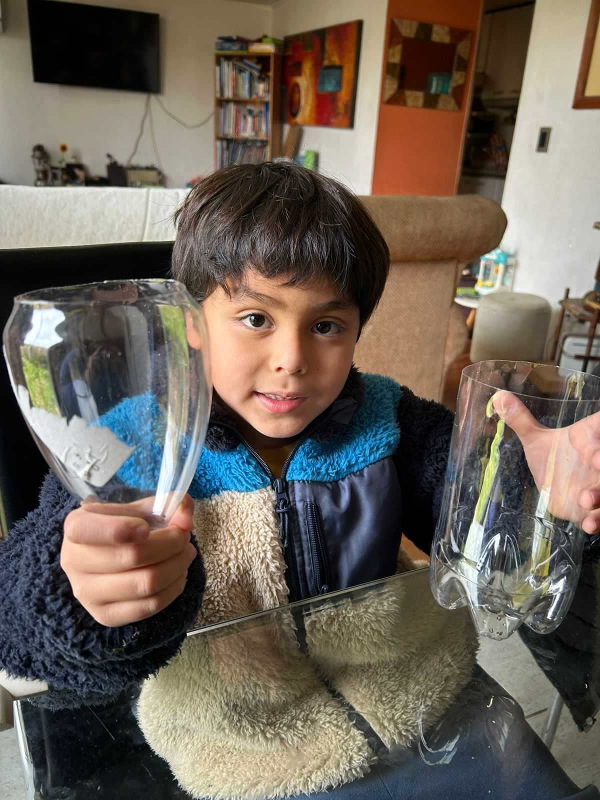
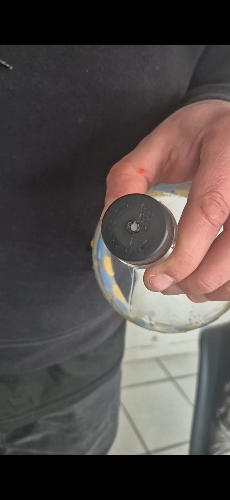
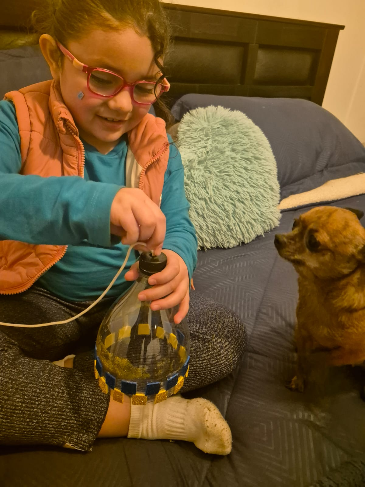
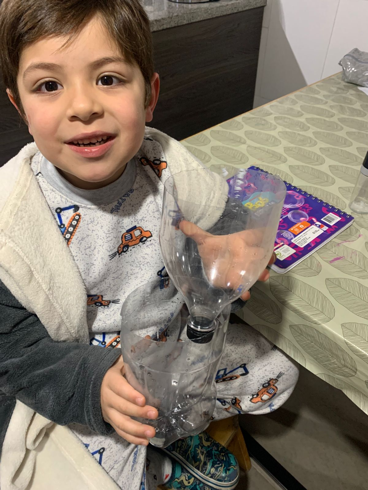
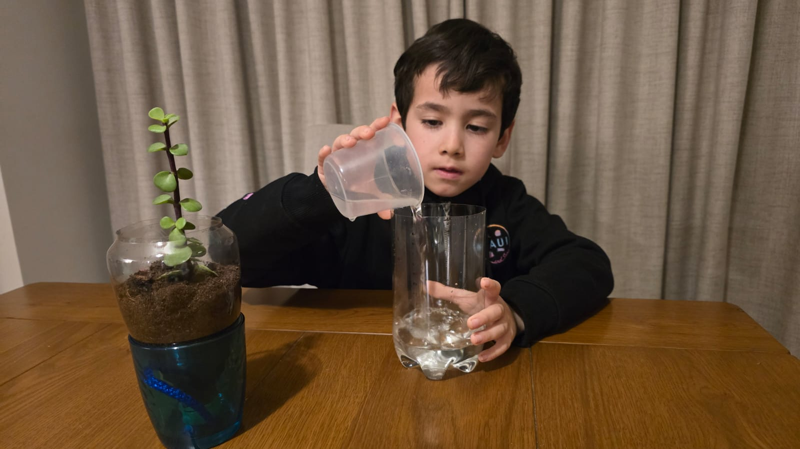
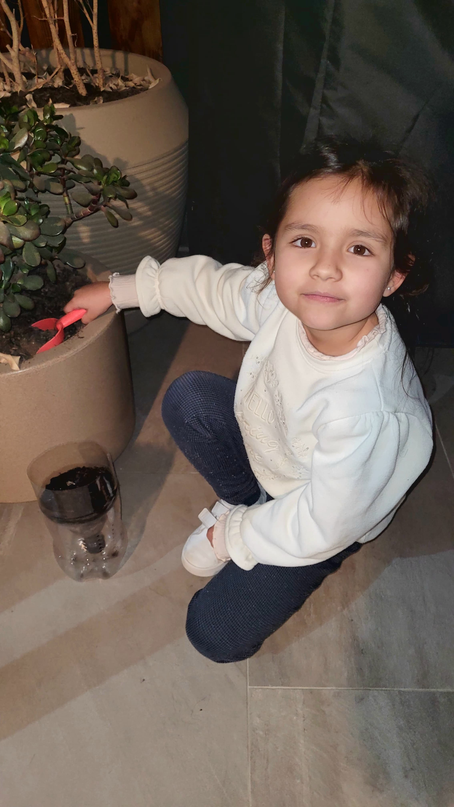
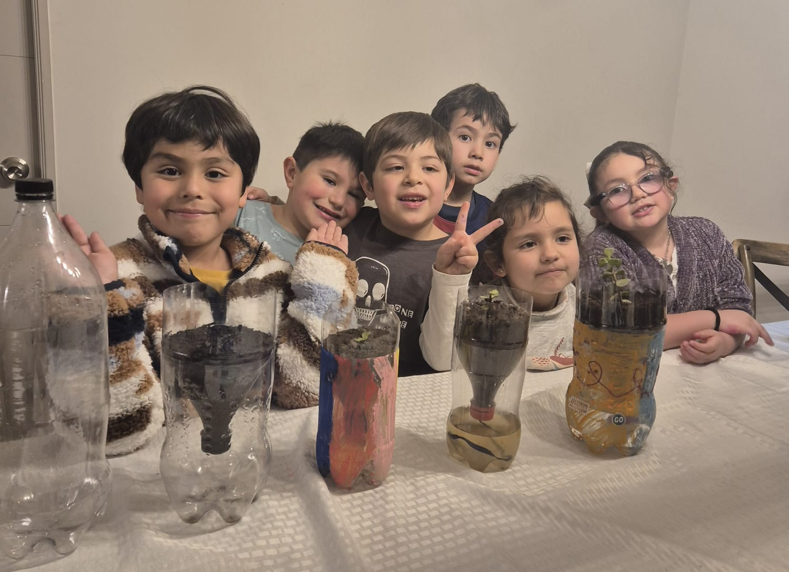

Self-watering pot
Step by Step
Step 1 - Cut the bottle in two parts

Step 2 - Make a hole in the lid to pass a thread


Step 3 - Flip the top part and put inside of the another

Step 4 - Put water in the base

Step 5 - We put soil in the top part of the bottle.

Step 6 - Plant a seed
